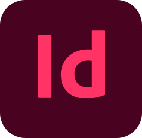

Sofia Lisina, M.Sc.
Interests: Graphic design | UX/UI | Brand design | Digital marketing
I recently completed my research at Åbo Akademi University, where I worked on bionanomaterials and 3D printing for drug delivery applications. Throughout my research, I was always drawn to the creative aspects of my work, using graphic design to enhance visualizations and communicate complex ideas. Inspired by the bold, imaginative approaches of artists like Frida Kahlo, Salvador Dalí, and Pablo Picasso, I am now eager to transition into UX/UI design, where I can combine my passion for creativity with my analytical skills. I'm excited to bring fresh perspectives to design and pursue a career in creating intuitive, visually compelling user experiences.
| Adobe Illustrator | Adobe Photoshop | Figma |
| Miro |  Adobe InDesign | |
| Microsoft Word | Microsoft Excel | Microsoft PowerPoint |
- +358 44 9231156
- lisina.sofya@gmail.com
- Sofia Lisina
- Espoo, Finland
-

2023–2024 Professional training: “Graphic and UX/UI designer” (online), Educational Center for CAD and Design, Faculty of Software Engineering and Computer Technology, ITMO University, Saint-Petersburg.
2017–2019 M.Sc. degree (with distinction) in Chemical Technology, Faculty of Drug Industrial Technology, St. Petersburg State Chemical and Pharmaceutical University (SCPU), Saint-Petersburg.
Thesis: “Development and investigation of potential drug delivery systems”.
2007–2012 Specialist degree (corresponds to master´s degree) in Chemical Engineering of
Organic Substances, Faculty of Chemical Engineering and Biotechnology, St.Petersburg State Institute of Technology (Technical University), Saint-Petersburg.
Thesis: “Synthesis of imide-containing phthalodinitriles and phthalocyanines on its basis”.
02.2024—04.2024 UX/UI intern (remote), Enrique Sanchez Organization, Helsingborg, Sweden.
2019–2024 Researcher, Faculty of Sciences and Engineering, Pharmaceutical Sciences Laboratory, Åbo Akademi University, Turku, Finland.
2021–2022 Pharmaceutical developer (Quality control), Curify Oy, Helsinki, Finland.
2013–2017 Engineer, FSUE RRC “Applied Chemistry”, Saint-Petersburg.
2012–2013 Assistant chemist, Department of Chemical Technology of Organic Dyes and Phototropic Compounds, St. Petersburg State Institute of Technology (Technical University), Saint-Petersburg.